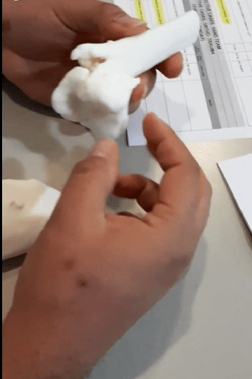
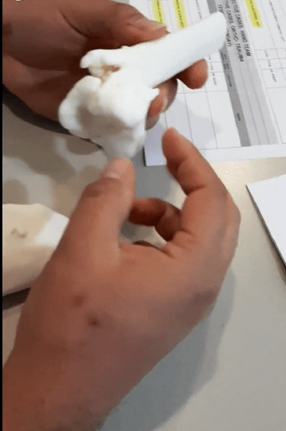

Saumyam DwivediContact
Medical 3D Printing|3D Reconstructions|Surgical Models
A healthcare professional,I have received training from University College London and Vellore Institute of Technology , VIT University. Currently I am working with Sinterex at Dubai Health Authority (DHA) innovation center , enabling surgeons to use medical 3D printing for complex surgical procedures. |
|
3D Lab Manager|Clinical Engineer Sinterex3D Lab - Rashid Hospital Dubai Health Innovation Center
Projects: Setting up Point-of-Care 3D Lab- My work has twofold objective at client’s (surgeon’s) location and 3D Lab, serving as a point of contact between clients at DHA , radiology team and anatomical modeling lab 3D Lab - handling medical scan files (CT , MRI , CT Angio , CBCT) in DICOM format from the radiology team at Rashid Hospital perform image segmentation of the data using Materialise Mimics
Patient Specific Models

Clinical Workflow - Cerebral Aneurysm


Clinical Workflow - Aortic Valve Planning


Clinical Workflow - Apert's syndrome correction


Clinical Workflow - Distal Tibial Fracture


 
